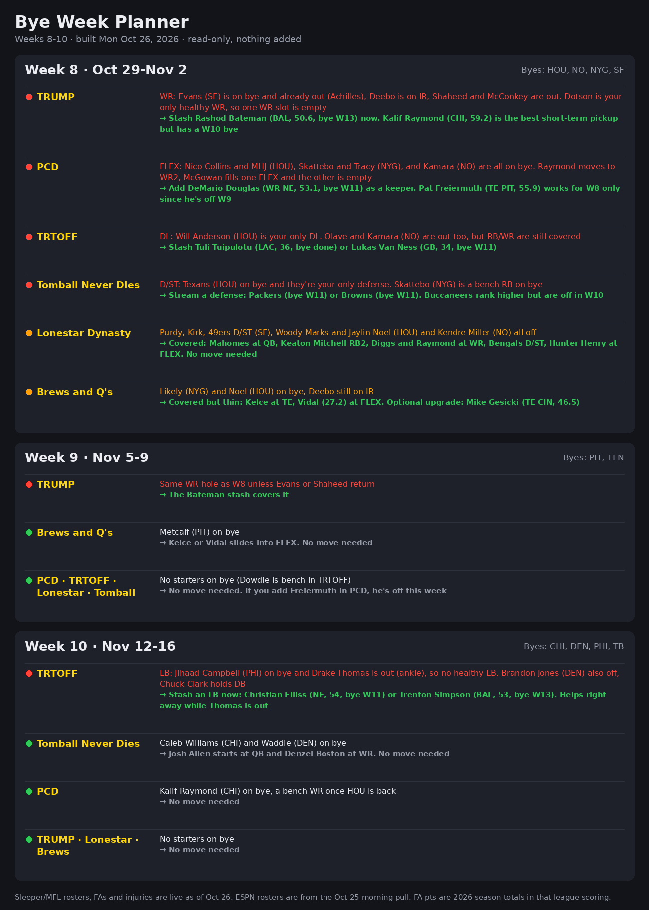
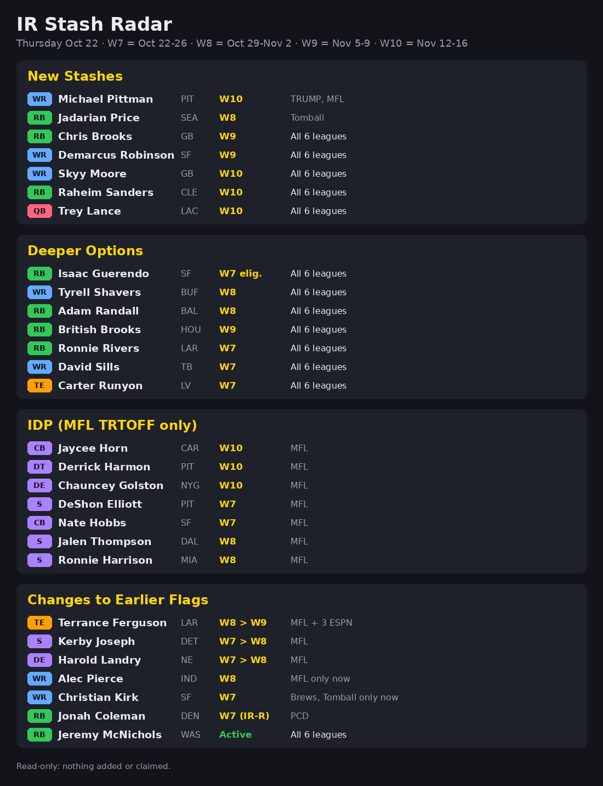
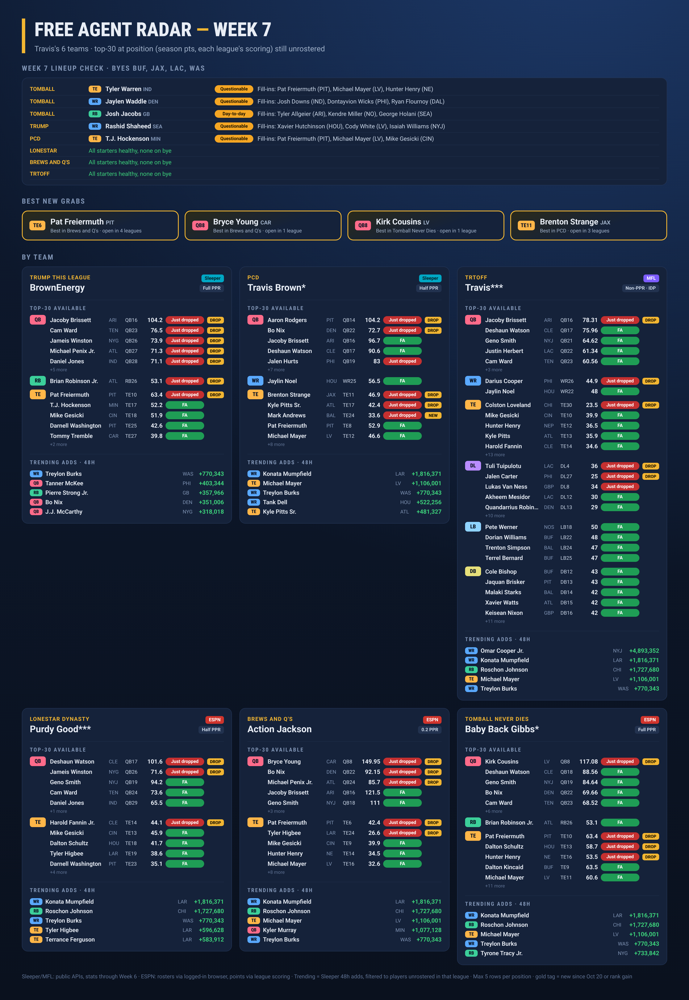

Betting report
Fantasy Football Routines
Weekly checks for six leagues. All times Central.
- TRUMP Sleeper
- PCD Sleeper
- TRTOFF MFL · IDP
- Lonestar Dynasty ESPN
- Brews and Q's ESPN
- Tomball Never Dies ESPN
Statuses in the reports: Out · Questionable · Clear
ROUTINES
One card per routine, in weekday order.
-
Mon · ~10:00 AM
Last run Oct 26
Bye week planner
Byes 2-3 weeks out that leave empty starting spots, plus free agents to stash.
Latest report
-
Tue & Thu · 9:23 AM
Last run Oct 22
IR return stash alerts
Players nearing return from IR who are free agents in your leagues.
Latest report
-
Tue & Thu · 9:37 AM
Last run Oct 22
Top-30 free agents
Tuesday covers availability after waivers and new drops; Thursday covers lineup adjustments (injured, doubtful or bye starters and fill-ins).
Latest report
-
Wed · ~10:00 AM
Not run yet
Trade watch
Trade partners by roster depth and weakness, with one or two fair trades per league.
-
Thu · 4:48 PM
Last run Oct 22
Lineup lock check
Starters in Thursday night's game and early injury flags.
-
Sun · ~10:00 AM
Last run Oct 25
Sunday lock check + emergency pickups
Starters who are out plus healthy free agents playing that day.
Latest report
GROUND RULES
- Read-only. No lineup changes, adds, drops, claims, or trades without approval.
- Reports arrive as dark graphics with a short summary.
LATEST REPORTS
Tap a graphic to open it full size.
Bye week planner
Mon Oct 26
Weeks 8–10 · built Mon Oct 26, 2026 · read-only, nothing added

Lineup lock check
All clear
Sunday run · Week 7 · Oct 25 · noon games lock 12:00 PM CT

IR stash radar
Thu Oct 22
Players nearing a return who are free agents · read-only, nothing added or claimed

Free agent radar
Oct 22
Week 7 · top 30 at each position across all six leagues
